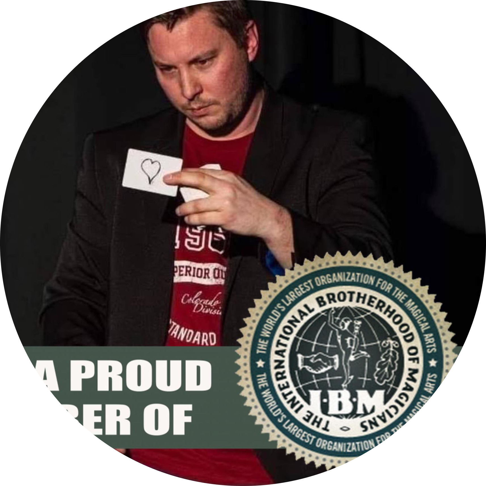

|  |
Alexander MunzKünstlerMitglied in der International Brotherhood of Magicians |
| Theaterarbeit | Zauberarbeit | ||
|---|---|---|---|
| Schauspieltraining mit Anne Kathrin Madeleine | La Vivandière, Frankreich | aktives Mitglied in der International Brotherhood of Magicians | seit 2019 |
| Schauspieltraining mit Gerhart Kraner | Theaterwerkstatt, Donzdorf | Diverse private Zaubershows | Herrenmühle zu Adelberg |
| Theatertraining mit Ulrike DesRoches | Theater im Bahnhof, Rechberghausen | Kinderzaubershow (eigene Konzeption) | 2020 Theater im Bahnhof, Rechberghausen |
| Gesangs- und Musicalarbeit | ||
|---|---|---|
| Gesangsausbildung bei Britta Medeiros | ||
| Vocalist bei diversen Bandprojekten | ||
| Konzeption und mitwirken in einer Musicalgalashow 2015 | Rollen: |
|